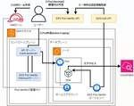
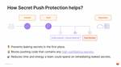
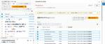
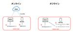

APC 技術ブログ
https://techblog.ap-com.co.jp/
株式会社エーピーコミュニケーションズの技術ブログです。
フィード
TryHackMe Advent of Cyber 2023から2024へ（８） Mobile analysis(モバイル分析)
APC 技術ブログ
Mobile analysis(モバイル分析) を理解してフォレンジック調査をする方法を解説します。
5分前
【イベント登壇レポート】エンジニアの輪 at 名古屋に参加してみた！
APC 技術ブログ
はじめに こんにちは！ クラウド事業部の升谷です！ 今年登壇したLT会の振り返りを続々と投稿しておりまして、 今回は真夏に参加しました、「エンジニアの輪」について紹介します！ ↓これまで投稿したレポートたちです。 ぜひチェックしてください！ techblog.ap-com.co.jp techblog.ap-com.co.jp エンジニアの輪 【エンジニアの輪】とは このイベントではLTにて勉強や刺激、知識の共有・気づきになることも目的としております。 また、現役エンジニアや今後エンジニアになりたい人たちが交流できることを重視しております。 職場外の方と話をして、新しい知見を得てください。 c…
18時間前

EKS Pod Identityの仕組みを深堀りしてみた 1
1
APC 技術ブログ
EKS Pod Identityの仕組みを初心者目線で解説します。EKS Pod Identityとは？一言で言うと、PodにIAMアクセス許可を付与する機能です。なぜ必要なのか？なぜ仕組みを知る必要があるのか？
1日前
Amazon ECS タスクの停止原因を確認する方法
APC 技術ブログ
目次 目次 はじめに タスク停止で困っていた状況 調べ方 感想 はじめに こんにちは！クラウド事業部の野村です。 学習目的でECSタスクをデプロイしていたのですが、原因不明のタスク停止に悩まされていました。 そんな中で、トラブルシューティングに役立つ調査方法がわかったので、共有でブログ投稿いたします！ タスク停止で困っていた状況 CDKでECSを含む環境をデプロイすると、しばらくは環境のテスト利用が可能となります。 しかし、一定時間経過すると環境への接続がエラーとなってしまい、原因を調べると、ECSタスクが前段のロードバランサ―からのヘルスチェックに失敗し、繰り返し再作成されていました。 停止…
3日前

GitLab 17.5の紹介: GitLab Duo Quick Chat / Secret Push ProtectionのGA / Docker Machine executorのDeprecation
APC 技術ブログ
こんにちは、クラウド事業部 CI/CDサービスメニューチームの山路です。 今回は10月18日にリリースされたGitLab 17.5 のアップデート内容を紹介します。本記事ではすべてのアップデート情報を詳細に記載してはいませんので、興味ある内容があれば各ドキュメントを参照ください。 about.gitlab.com GitLab Duo関連のアップデート: Duo Quick Chatの導入 / Duo ChatがMerge requestに対応 セキュリティ関連のアップデート: Secret Push ProtectionのGA Kubernetesとの連携: GitLab CLIコマンドによ…
3日前

Terraform Stacks の機能と使い方を紹介
APC 技術ブログ
先日の HashiConf 2024 にて、HCP Terraform の新機能「Terraform Stacks」が公開されました！ Terraform Stacks とは Terraform Stacks は単一の Terraform 構成で複数のインフラ環境を管理して、複雑化したインフラ環境の管理を簡素化・効率化できる機能です。 既存のルートモジュールを置き換え、子モジュールの上に新しいレイヤーを追加することによって、Terraform Stacks は IaC の概念を拡張しています。 従来の HCP Terraform では1ワークスペースで1環境の管理しかできませんでした。 例えば…
4日前
Azure AppService / Container AppsでManaged Identityを利用する
APC 技術ブログ
こんにちは。ACS事業部亀崎です。 最近取り組んでいたBackstage RBAC Policy対応のため、Open Policy Agentのopa-serverをAzure Container Appsで利用するための設定をする機会がありました。 Backstage RBAC Policyの対応についてはぜひ以下の投稿をご覧ください。 techblog.ap-com.co.jp opa-serverはPolicyという設定情報の置き場としてAzure Blob Storageを利用することができるのですが、アクセスの際の認証方法としてmanaged identityが利用できるように記載さ…
4日前

AWS Console-to-CodeがGAされたので使いどころを考えてみる 1
APC 技術ブログ
こんにちは、クラウド事業部の山路です。 今回は先日GAとなったAWS Console-to-Codeを使う場面を、他のAWSサービスとも比較しながら考えてみました。GAされたけどどんなサービスかあんまりわかってないという方、どこで使えばいいか分からないという方の助けになれば幸いです。 本記事の要約 AWS Console-to-Codeの概要 / アップデート内容の紹介 AWS Console-to-Codeのユースケース AWS Console-to-Codeに向いていること AWS CLIを生成して作業手順書やスクリプト作成をサポートする コード化したいリソースを画面から直接指定できる A…
4日前
【HashiCorp】HashiConf 2024 参加レポート
APC 技術ブログ
ACS事業部の埜下です。 今年は HashiCorp Ambassador に選出していただいて「HashiCorp プロダクトやっていき」の年でもあるため、HashiCorp の年次イベントである HashiConf 2024 に現地参加してきました！ イベント全体の雰囲気をお伝えできるように写真多めで HashiConf 2024 について紹介していきます。 HashiConf 2024 で発表された新機能などの情報は速報として公開していますので、ぜひ本記事と併せてご覧ください。 techblog.ap-com.co.jp HashiConf とは 10/13 (日) 10/14 (月) …
4日前
【Zscaler】ZCC利用ユーザーの、ZIA、ZPA、ZDXそれぞれのステータスを確認するには？
APC 技術ブログ
目次 はじめに 1. ZCCにおけるZIA/ZPA/ZDXの 有効/無効 設定について 2. Zscaler Client Connector PortalからZCCのステータスを確認する方法 3. 検証 3-1. 検証（ZDX：有効） 3-2. 検証（ZDX：無効） 4. 参考 おわりに はじめに こんにちは、エーピーコミュニケーションズiTOC事業部 BzD部 0-WANの平光です。 Zscalerをご利用の方は、端末にZCCをインストールしている方がほとんどではないかと思います。 ZCCを利用しながら、ZIA/ZPA/ZDXのどの機能を有効にしているかは設計や設定次第となります。 Zsc…
7日前
GitHub Advanced SecurityのAlertを、Azure Functions経由でいい感じにSlackに飛ばす
APC 技術ブログ
はじめに なぜAzure Functions経由? いざ実装 SlackにIncommig Webhookをインストール Azure Functionsの実装 GitHub Webhookの実装 Alertを飛ばしてみよう 最後に PR はじめに ACS事業部でEngineering Managerもとい中間管理職をしている谷合です。 Managerになってからというものの、めっきり手を動かす機会が減り、その過程でのエンジニアとしてのワクワクを感じなくなってきたなと思う今日この頃。 中間管理職だってワクワクしたい！！！というピュアピュアな想いで本ブログを書いてみました。 弊社はGitHub社と…
8日前
【HashiConf 2024】HCP Vault Secrets アップデート速報
APC 技術ブログ
HashiCorp の年次イベント HashiConf 2024 の Day 2 にて HCP Vault Secrets (HVS) に多くのアップデートが発表されました！ Day 2 で発表されたアップデート情報 Auto-rotation (GA) Dynamic Secrets (Public beta) Resource-level access control (GA) Audit log streaming (Public beta) Plus SKU (GA) Auto-rotation (GA) Auto-rotation 従来、HCP Vault Secrets は静的シー…
8日前
【HashiConf 2024】HCP Vault Radar がパブリックベータとして登場！
APC 技術ブログ
HashiCorp の年次イベント HashiConf 2024 の Day 2 にて HCP Vault Radar がパブリックベータとして公開されました！ HCP Vault Radar GA HCP Vault Radar は HashiCorp が提供するプラットフォーム「HashiCorp Cloud Platform (HCP)」で利用できるシークレット スキャンの製品です。 コード内の管理されていないシークレットの検出と識別を自動化し、セキュリティチームが漏洩したシークレットを修正するための適切なアクションを実行できるようになります。 パブリックベータの発表前にいくつか機能は公…
8日前
【HashiConf 2024】HCP Terraform アップデート速報
APC 技術ブログ
ボストンで開催されている HashiConf 2024 の Day 1 にて HCP Terraform のアップデートが公開されました！ Module lifecycle management (Public beta) Ephemeral Workspaces for Projects Terraform Migrate (Public beta) Terraform Stacks については以下の記事をご覧ください。 techblog.ap-com.co.jp techblog.ap-com.co.jp Module lifecycle management (Public beta) …
9日前
【HashiConf 2024】HCP Terraform Stacks がパブリックベータ公開されました！
APC 技術ブログ
昨年の HashiConf 2023 で発表されていた Terraform Stacks がついにパブリックベータとして公開されました！ Terraform Stacks Terraform Stacks を利用することで複数の関連するインフラモジュールを管理し、単一の Terraform 構成の中でインフラの構築を複数回繰り返して効率化できる、ようです。 正直なところ文章だけでは具体的なイメージが難しいですね…。 パブリックベータとして公開されていますので、実際に触ってみて後日具体的な機能を紹介しようと思います。 （追記）Terraform Stacks についての記事を追加しましたので、ぜ…
9日前
BackstageのPermission管理でもPolicy as Codeを
APC 技術ブログ
Backstage Permission Framework 拡張Plugin こんにちは。ACS事業部亀崎です。これまで何回かにわたってBackstageのPermissionについてご紹介してきました。 techblog.ap-com.co.jp techblog.ap-com.co.jp techblog.ap-com.co.jp 最初の回でご紹介した通り、BackstageのPermission（RBAC）のPolicy指定は標準ではソースコードで記述する必要があります。（以下のようなイメージです） class TestPermissionPolicy implements Permi…
13日前

【Okta】OktaでWindowsサインイン <Desktop MFA for Windows>
APC 技術ブログ
OktaでWindowsサインインを多要素認証する機能「Desktop MFA for Windows」についてご紹介します。
14日前

【Zscaler】FY24 Zscaler Avengers in Hokkaido 参加レポート
APC 技術ブログ
今回Zscaler社 初の試み！！ ビジネスデベロップメント部のエンジニアリングマネージャーの山根です。 2022年に発足した弊社ゼロトラスト事業の責任者をさせていただいております。 今期Zscaler社の初の試みとして開催された、Zscaler Avengers in Hokkaidoへご招待いただきましたので参加レポートをお届けします！！ Zscaler Avengersとは？ Zscaler Avengersは、Zscaler社が主催するパートナー向けイベントです。 国内150社以上のパートナーの中から今期の売上利益に貢献した上位数社が招待されています。 弊社は奇跡的にも上位の枠内に収ま…
16日前
AWS Certified AI Practitioner (AIF-C01) ベータ版 に合格したので所感を綴る
APC 技術ブログ
はじめに こんにちは、クラウド事業部の坂口です。 先月 (2024/9) に AWS AWS Certified AI Practitioner のベータ版を受験し、無事に合格できたので所感を書いていきたいと思います。 (追記) 2024/10/9 時点で AWS AWS Certified AI Practitioner の標準版がリリースされています。 以降、試験内容は標準版に準拠しますのでご注意ください！ 目次 はじめに 目次 関連記事 AWS Certified AI Practitioner ベータ版 について 試験について 点数 勉強期間 教材 試験の感想 お知らせ 関連記事 JA…
16日前
【参加レポート】Paloalto ignite Japan 2024 に参加！ ～生成AIの活用とどう向き合うか～
APC 技術ブログ
iTOC事業部 マネージドビジネスソリューション部の武居です。 APCの本社NWインフラの請負部隊とICTセールス&コンサルチームの責任者として、お客様へITインフラ周りの提案を行っております。 簡単にチーム紹介ですが、ICTセールス&コンサルチームは2024年7月から発足し、主に企業の情報システム部門の方々と一緒に伴走しながら、社内にITインフラの導入をするためのご支援をさせていただいております。 まだ発足したばかりのチームですので、社外はもちろん、社内からも「ちゃんと仕事をしているのか？」と疑われないように、積極的に発信活動を行おうと考えております＾＾ 今回は、先日開催された Paloal…
17日前
GitLab Deployment approvalsで安全なデプロイを実現する
APC 技術ブログ
こんにちは、クラウド事業部 CI/CDサービスメニューチームの山路です。 今回はGitLabのDeployment approvalsを紹介します。Deployment approvalsは指定した環境へのデプロイ実行に特定ユーザーからの承認を要求し、意図しないタイミングのデプロイを防ぎます。 docs.gitlab.com 背景 GitLabのDeployment approvalsは、GItLab Environmentに対する保護を実現する機能です。GitLab Environmentは簡単に言うとコードがデプロイされる場所をGitLab上で表すリソースで、デプロイ履歴の記録やアクセス用…
17日前
何もしてないのに HCP Terraform の Drift Detection が失敗するんですが（AzureRM Provider 編）
APC 技術ブログ
こんにちは、ACS事業部の埜下です。 今回は HCP Terraform を使っていくなかで発生した事象について紹介していきます。 前置き HCP Terraform（旧称 Terraform Cloud）には Drift Detection という、それはもう便利な機能があります。 どういう機能かと言うと、Terraform で作成したリソースが外部から更新された場合に検知してくれます！ 外部からの更新、というのが所謂ドリフトです。 ドリフトを検知してくれるので Drift Detection、わかりやすいですね。 HCP Terraform を使わなくても同じような機能は実現できますが、H…
18日前
GitLab Service accountとReviewdogを使ってCloudFormationテンプレートをレビューする
APC 技術ブログ
こんにちは、クラウド事業部 CI/CDサービスメニューチームの山路です。 今回はGitLab Service accountとReviewdogを組み合わせた例を紹介します。Service accountは有効期限のないアクセストークンを発行できます。発行したトークンをReviewdogに渡して利用すると、トークンの期限を気にせずReviewdogを利用できます。 背景 以前GitLab Service accountについて紹介をしたことがあります。Service accountを使うとBot userを作成し、有効期限のないPersonal access tokenを発行できます。 tec…
18日前
AWS Savings Plansについてまとめてみた
APC 技術ブログ
はじめに どんなひとに読んで欲しい Savings Plansとは 期間 料金の支払い方法 ３つのプラン 割引について 購入手順 コミットメント額に迷ったら… 躓いた箇所 おわりに お知らせ はじめに こんにちは、クラウド事業部の山下です。 AWSのコストを削減する方法として、Savings Plansという料金モデルを購入・適用することができます。 AWSの試験等で出てくるので概要は知っていたものの、これまで実際に活用したことがありませんでした。 現在関わっている業務の環境でSavings Plansが適用されており、業務を行う中でSavings Plansへの理解が深まったのでまとめておき…
23日前
【イベント登壇レポート】AWS Startup Community のLT会に参加！生成AIの話をしたら即終了！？
APC 技術ブログ
はじめに こんにちは！ クラウド事業部の升谷です。 今年登壇したLT会の振り返りということで前回に続き、 2024/06/28(金) に開催された AWS Startup Community主催のイベント 「生成AIの話をしたら即終了！ランチタイムLTイベント」 についてレポートしていきます！ 前回はセゾンテクノロジーさんの「color is」についてレポートしました！ techblog.ap-com.co.jp AWS Startup Communityについて AWS Startup Community へようこそ！！ ここは AWS を利用している スタートアップのためのコミュニティ で…
24日前
Amazon SESのMail Managerを使ってみる
APC 技術ブログ
目次 目次 はじめに ゴール トラフィックポリシーの作成 Mail Managerの使用を開始する トラフィックポリシーを作成 ルールセットの作成 ルールセットを作成 イングレスエンドポイントの作成 イングレスエンドポイントを作成 メール送信テスト まとめ おわりに はじめに こんにちは、株式会社エーピーコミュニケーションズの松尾です。 前回の続きです。 前回まででAmazon SESがメールリレーしてメールを送信する構成が完成しています。 前回までの状態 今回は、Amazon SESのMail Manager機能を使って、SESが受信したメールをアーカイブする機能を検証してみたいと思います。…
24日前
【イベント登壇レポート】セゾンテクノロジー color isに潜入！
APC 技術ブログ
はじめに こんにちは！ とってもお久しぶりになってしまいました！ クラウド事業部の升谷です。 今年もAPCは登壇活動に力を入れており、様々なイベントに参加しております！ その振り返りをブログとして投稿していきます！ （かなりの時差投稿もありますが、お気になさらず、、！！） 今回は、2024/04/25(木)に参加したセゾンテクノロジーさんのcolor isのイベントについてです！ saison-coloris.connpass.com セゾンテクノロジーさん主催のLT大会に参加！https://t.co/tM10TLJcAC #cloudlt— ますや (@masuchoku) 2024年4月…
25日前
OpenShiftで複数のリソースを一括削除する方法【kubectl/ocコマンド活用】
APC 技術ブログ
OpenShift環境で複数のリソースを削除しようとした際に、ワイルドカードが使用できずエラーが発生。この記事では、kubectlやocコマンドを使った効率的なリソース削除方法をChatGPTで調べ、特にラベルを活用した削除手順が役立つことが分かった実体験を紹介します。
1ヶ月前
Amazon SESでメールリレーさせてみる
APC 技術ブログ
目次 目次 はじめに ゴール SESの構築 Postfixの構築 メール送信テスト 参考 まとめ おわりに はじめに こんにちは、株式会社エーピーコミュニケーションズの松尾です。 やりたいことはこのような構成になります。 Postfixからメールクライアントに対してメールを送信する際に、直接送信するのではなく、SESを経由（リレー）させて、メールを送信することを検証していきます。 Route53はSESへ送信元ドメインを認証させるために設定しています。今回でいうと、メール送信元のドメイン（example.com）と宛先のドメイン（example.net）をあらかじめRoute53でドメイン登録…
1ヶ月前
TryHackMe Advent of Cyber 2023から2024へ（７） SSRF(サーバサイド・リクエスト・フォージェリ)
APC 技術ブログ
サーバー側リクエストフォージェリ ( SSRF )を理解して対策する方法などを解説します。
1ヶ月前